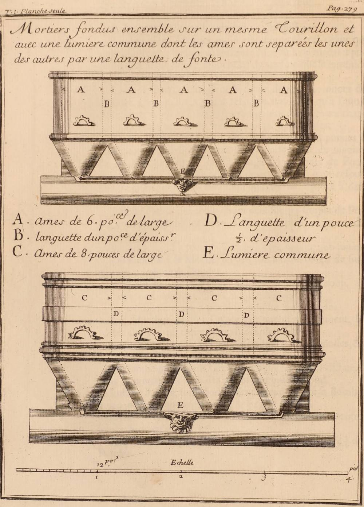

От чертежа в книге — к орудию на сто лет
Читается подряд. Нажми на удар — откроется подробный разбор с источниками.
В 1756 году граф П. И. Шувалов стал генерал-фельдцейхмейстером — начальником всей русской артиллерии.Узнать подробнееСвернуть
«Граф был человек замыслов великих и предприимчивый», — пишет о нём артиллерист Михаил Данилов. Шувалов вёл артиллерию в годы Семилетней войны с Пруссией. При нём армия получала одно новое орудие за другим. Самым долгоживущим из них оказался «единорог».
Источники: «Записки артиллерии майора М. В. Данилова, написанные им в 1771 году» («Русский архив», 1883, кн. 2, вып. 3); А. В. Громов, «О подражаниях „шуваловской“ артиллерии в западноевропейских странах», Сборник исследований и материалов ВИМАИВиВС, вып. XIII, 2024.
Ещё до этого Шувалов придумал «секретную гаубицу»: дуло у неё было не круглое, а сплюснутое, и стреляла она одной дробью.Узнать подробнееСвернуть
«…в которой было дуло не круглое, а продолговатое, подобно сжатому до половины круглому кольцу; а как оное орудие стреляло широко одной дробою, то гоубицу назвали секретною и дула никому не давали смотреть, заслоняли его медными закрышками и замыкали замком».
Расчёт гаубицы давал особую присягу: никому не показывать дуло, «хотя уже многие его знали», — усмехается Данилов. Слабое место орудия называет историк Артиллерийского музея А. В. Громов: из-за широкого раструба для картечи оно не могло стрелять ни ядрами, ни зажигательными снарядами.
Источники: «Записки» М. В. Данилова; А. В. Громов, Сборник ВИМАИВиВС, вып. XIII, 2024.
Новый начальник требовал от офицеров изобретений: «кто может что показать». Обер-фейерверкер Михаил Данилов тоже решил предложить что-нибудь новое.Узнать подробнееСвернуть
«По вступлении графа в артиллерию появились многие прожекты, дельные и негодные», — вспоминает Данилов. Он родился около 1722 года и в 1743 году окончил Артиллерийскую школу. В 1756 году его произвели в обер-фейерверкеры — на место его приятеля, фейерверкера Матвея Григорьевича Мартынова.
Источник: «Записки» М. В. Данилова.
Единорог начался с чужого чертежа: Данилов увидел во французской книге Сен-Реми мортирки с каморой конусом.Узнать подробнееСвернуть
«Однажды усмотрел я в „Записках артиллерийских“ Сен-Реми (в первом томе) на чертеже сплошь четыре мортирки напечатаны, каморы у них были конусом, а запор сделан на середине один, и названы оные мортиры батарейками».
Камора — узкая часть канала у казны, куда кладут порох. Книга француза Пьера Сюрирея де Сен-Реми «Mémoires d’artillerie» вышла вторым изданием в Париже в 1707 году. Данилов читал её в русском переводе: первый том Академия наук выпустила в 1732 году. В первом томе к странице 279 есть лист: «мортиры, отлитые вместе на одной цапфе, с общим запалом», — пять стволов по 6 дюймов и четыре по 8. Сен-Реми приводит письмо о пробе 1703 года: связку из пяти мортир испытали, а затем заказали ещё одну, из четырёх стволов по 8 дюймов. Данилов вспоминал о четырёх.

«Mortiers fondus ensemble sur un mesme tourillon» — мортиры, отлитые вместе, с общим запалом E. П. Сюрирей де Сен-Реми, «Mémoires d’artillerie», т. 1, Париж, 1707, лист к с. 279. Internet Archive, общественное достояние. Источники: «Записки» М. В. Данилова; Сен-Реми, «Мемории или Записки артиллерийския», т. 1, СПб., 1732 (Президентская библиотека); P. Surirey de Saint-Remy, «Mémoires d’artillerie», t. 1, Paris, 1707, p. 279–280 и лист (Internet Archive).
Мартынов одобрил идею. Отлили «батарейку» из четырёх мортирок под трёхфунтовое ядро — и на пробе от выстрела лафет разнесло в щепки.Узнать подробнееСвернуть
«…а как стали пробовать, то от выстрела лафет, который был на колесах, под мортирками весь раздробился в мелкие штуки».
Почему лафет не выдержал, Данилов не пишет. Запор у мортирок был «на середине один», на все четыре ствола.
Источник: «Записки» М. В. Данилова.
После многих проб оставили два ствола — «близнят». На полигоне они годились. Их наделали множество и послали в армию, а там бросили как бесполезные.Узнать подробнееСвернуть
Пробы шли на Выборгской стороне Петербурга. «Близнят» с лафетами отправили «в тогдашнюю войну против короля прусского», и, честно признаёт Данилов, там они были «брошены или найдены бесполезными». Английские историки, пишет Громов, тоже полностью отвергают ценность «близнят».
Источники: «Записки» М. В. Данилова; А. В. Громов, Сборник ВИМАИВиВС, вып. XIII, 2024 (о «близнятах» системы Шувалова).
Тогда отлили один ствол того же калибра — «одиночку». Она стреляла картечью, гранатой и ядром попеременно.Узнать подробнееСвернуть
«Наконец вылита была такого ж калибра и названа „одиночка“, которая стреляла картечью, гранатой и ядром попеременно; оная „одиночка“ имела в себе камору конусом, отчего стреляла далеко, потому графу Шувалову показалась».
В те годы орудия различали прежде всего по снарядам: пушка била ядрами, гаубица — гранатами. Единорог, длинная гаубица с конической каморой, стрелял и тем и другим. И ещё картечью.
Источники: «Записки» М. В. Данилова; Е. И. Юркевич, «О шуваловских единорогах и грибовалевских гаубицах», 2002.
Шувалов велел лить такие стволы всё крупнее — и с тех пор их стали звать «единорогами».Узнать подробнееСвернуть
«Он приказал вылить калибром на шестифунтовую гранату, потом и до пятипудовой бомбы дошло, и названы оные были от того времени „единорогами“. Увенчал граф своей графской короной оные „единороги“, произшедшие от выдумки случайной моей с Мартыновым».
Корона на стволах — графская, а выдумка, напоминает Данилов, его с Мартыновым. И добавляет, что единороги «по всей справедливости гораздо полезнее секретной гоубицы».

Четвертьпудовый единорог на лафете с передком. Иллюстрация к статье «Единорог», «Военная энциклопедия» И. Д. Сытина, т. 9, 1912. Викисклад, общественное достояние. Источник: «Записки» М. В. Данилова.
Союзники попросили новинку себе: в Вену отправили 13 секретных гаубиц и 10 единорогов разных калибров.Узнать подробнееСвернуть
Австрийская императрица в 1758 году просила орудия, чертежи с объяснениями и русских канониров для показательных стрельб. Орудия испытали летом 1759 года у Обергасинга под Веной. До сих пор в Военно-историческом музее Вены хранится русский четвертьпудовый единорог, отлитый в Петербурге в 1757 году. Франция от подарка отказалась. Людовик XV запретил своим дипломатам принимать орудие — «чтобы не поощрять гордость мсье Шувалова».
Источник: А. В. Громов, Сборник ВИМАИВиВС, вып. XIII, 2024 (по «Истории отечественной артиллерии», т. 1, кн. 2, 1960; каталогам венского Цейхгауза 1846 и Военного музея 1899).
Копировали ли единорог в Европе? Историк Артиллерийского музея проверил и не нашёл ни одной западноевропейской копии времён Семилетней войны.Узнать подробнееСвернуть
Саксонская «гранатная пушка» полковника Гойера, которую считали копией единорога, имела обычную гаубичную камору. Наполеон в 1811 году писал, что хочет, «чтобы эти гаубицы были прусскими гаубицами или единорогами, которые стреляют дальше, чем обычные гаубицы». Значит, отличал одни от других. Длинные французские гаубицы, описанные в 1831 году, — «по форме напоминающие единороги», но с цилиндрической каморой. Всерьёз европейцы заинтересовались единорогами, пишет Громов, только в эпоху наполеоновских войн.
Источник: А. В. Громов, Сборник ВИМАИВиВС, вып. XIII, 2024, с. 13–33.
Сама коническая камора не была новинкой. Новым было орудие, которое одно заменяло и пушку, и гаубицу.Узнать подробнееСвернуть
Конусом камору делали у мортир Сен-Реми, на гаубице В. Д. Корчмина 1707 года, у прусских полевых орудий полковника Хольцмана 1740–1744 годов. «Сама по себе коническая камора ещё не делала из орудия единорог», — подчёркивает Громов. Пруссаки отказались от своих камор уже в 1759 году: картузы от перевозки теряли форму и не всегда входили в камору. Единорог же устоял: камора и длина ствола оказались соразмерны.
Источники: А. В. Громов, Сборник ВИМАИВиВС, вып. XIII, 2024 (по Шарнхорсту, 1806); Е. И. Юркевич, 2002.
Единороги служили около ста лет: в 1805 году с них сняли все украшения, кроме фризов, в 1838-м изменили форму казны, на флоте они стояли до 1860-х.Узнать подробнееСвернуть
Главный признак единорога, коническая камора, сохранялся и во второй половине XVIII века, и в первой половине XIX, пишет историк Е. И. Юркевич. Громов добавляет, что единорог использовался и на флоте «вплоть до 60-х гг. XIX в.». А Данилов вышел в отставку в 1759 году и в 1771-м, укрывшись от московской чумы в сельце Семенково Рузского уезда, написал свои «Записки».
Источники: Е. И. Юркевич, 2002; А. В. Громов, Сборник ВИМАИВиВС, вып. XIII, 2024; «Записки» М. В. Данилова.